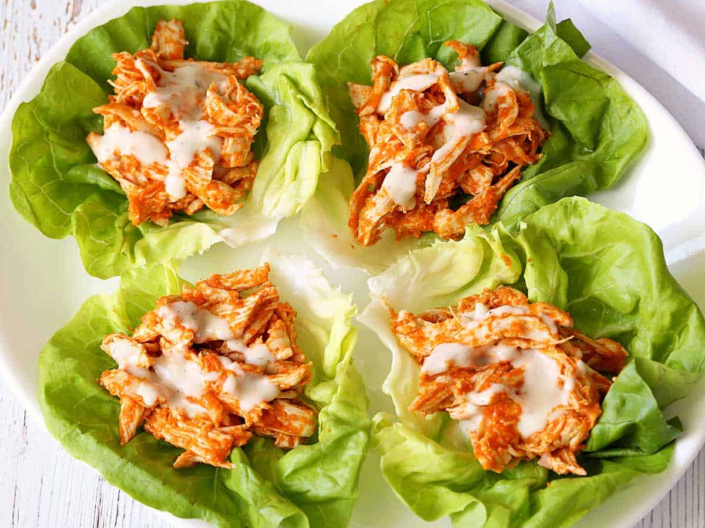

Buffalo Chicken Lettuce Wraps

Description
One of the best, most flavorful finger foods out there, buffalo chicken lettuce wraps are easy to make, fun to eat, and you can make them ahead of time, which is always a plus. They're ready in just 30 minutes!
I owe this recipe to my daughter. She made an initial version of it, which was very tasty but a bit time-consuming. Being a lazy cook, I immediately set out to make an easy version. It took a few tries, but the result is so incredibly good!
This truly easy recipe has quickly become a family favorite. I now make it, per my family's request, at least every other week. It's so easy, in fact, that the other day I had just one leftover chicken breast in the fridge, so I adjusted the amounts and quickly whipped up a single serving for myself for lunch. I was a happy camper!
Ingredients
Buffalo Sauce
- ⅓ cup Frank's Original cayenne pepper sauce
- 2 tablespoons unsalted butter melted
- 1 teaspoon garlic powder
- 1 teaspoon smoked paprika
Wraps
- 2 cups cooked chicken breast shredded (10 oz, from 2 medium breasts)
- 8 Boston lettuce leaves washed and well-dried
Toppings
- Blue cheese dressing homemade or store-bought
Steps
- Mix the sauce ingredients in a large bowl. Add the shredded chicken and mix until well coated.
- If desired, cover and heat in the microwave until heated through, 1-2 minutes. I usually serve these wraps cold.
- Place two lettuce leaves on each plate. Pile ¼ cup of the chicken mixture on top of each leave. Drizzle with the blue cheese dressing. Serve immediately, or refrigerate for up to two hours before serving.
Return to Home Page